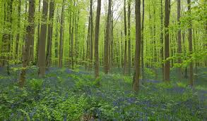
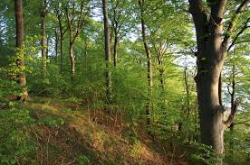
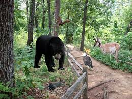

Forest Ecosystem
Forest ecology is one branch of a biotically-oriented classification of types of ecological study (as opposed to a classification based on organizational level or complexity, for example population or community ecology). Thus, forests are studied at a number of organizational levels, from the individual organism to the ecosystem. However, as the term forest connotes an area inhabited by more than one organism, forest ecology most often concentrates on the level of the population, community or ecosystem. Logically, trees are an important component of forest research, but the wide variety of other life forms and abiotic components in most forests means that other elements, such as wildlife or soil nutrients, are often the focal point. Thus, forest ecology is a highly diverse and important branch of ecological study.[citation needed] Forest ecology studies share characteristics and methodological approaches with other areas of terrestrial plant ecology. However, the presence of trees makes forest ecosystems and their study unique in numerous ways.
Ecosystem Around The Globe
Let’s start your look at forest ecology where energy from the sun enters the system: at the producer level, made up of organisms that can manufacture their own energy from this solar input. Green plants conducting photosynthesis serve as the producers of a forest ecosystem, and in the tropical rainforest of the Amazon, typically arrange themselves in four layers. The emergent layer includes huge trees towering 165 feet or more that are spaced far apart. Beneath these emergent trees lies the main canopy, composed of closely spaced trees generally 65 to 165 feet tall. They provide fruits, nectar and seeds for many creatures. The understory supports few plants as it receives very little sunlight. Almost nothing grows on the forest floor as it is devoid of sunlight.
types
An apex predator, also known as an alpha predator or top predator, is a predator at the top of a food chain, without natural predators. ... Humans have for many centuries interacted with apex predators including the wolf, birds of prey and cormorants to hunt game animals, birds, and fish respectively.
Consumer in a food chain are living creatures that eat organisms from a different population. ... Heterotrophs can be classified by what they usually eat as herbivores, carnivores, omnivores, or decomposers. On the other hand, autotrophs are organisms that use energy directly from the sun or from chemical bonds.
Producers make up the first trophic level. Producers, also known as autotrophs, make their own food and do not depend on any other organism for nutrition. Most autotrophs use a process called photosynthesis to create food (a nutrient called glucose) from sunlight, carbon dioxide, and water.
news about ecosystem
-
Forests of the world in 3D
Date: February 5, 2021 Source: University of Göttingen Summary: Primeval forests are of great importance for biodiversity and global carbon and water cycling. The three-dimensional structure of forests plays an important role because it influences processes of gas and energy exchange with the atmosphere, and provides habitats for numerous species. An international research team investigated the variety of different complex structures found in the world's forests, and the factors that explain this diversity.
-
Deforestation is stressing mammals out
Date: February 4, 2021 Source: Field Museum Summary: By analyzing hormones that accumulate in fur, researchers found that rodents and marsupials living in smaller patches of South America's Atlantic Forest are under more stress than ones living in more intact forests.